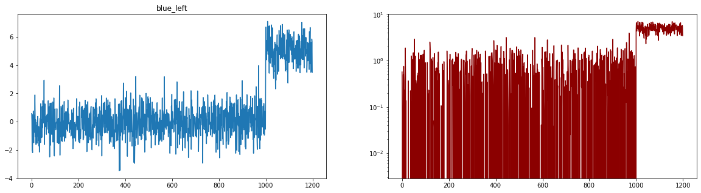
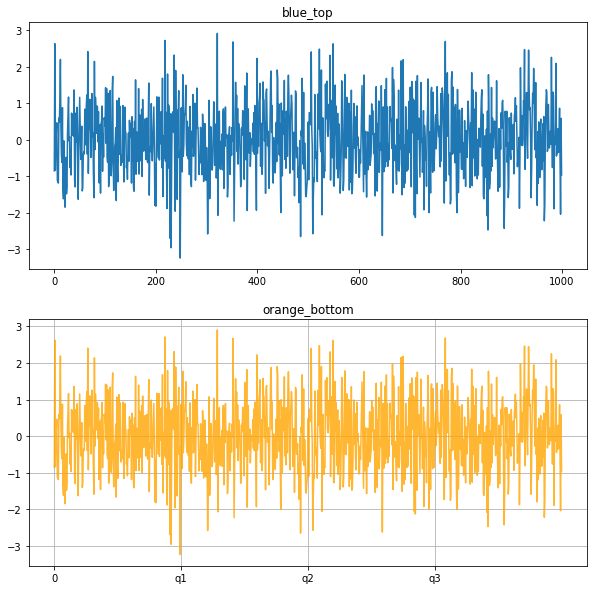
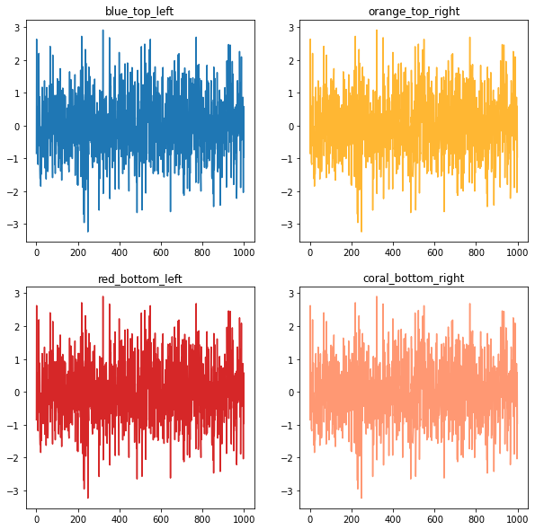
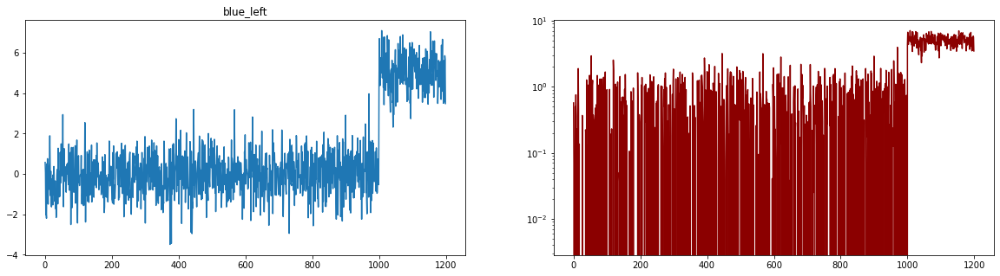
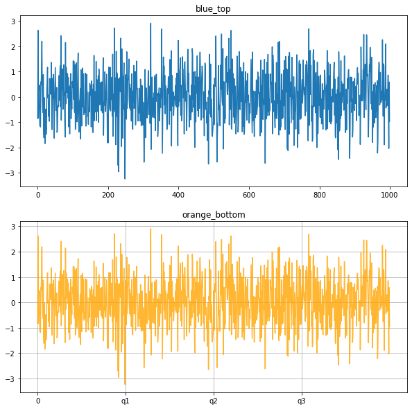
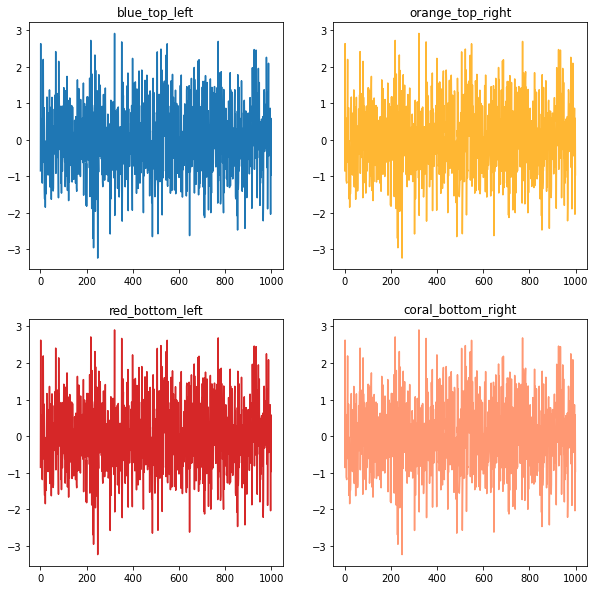

그래픽 인자 조정
2.4. 그래픽 인자 조정#
numpy의 설치
가상환경의 선택
conda install numpy Anaconda 설치 경로의 확인:
벡터와 행렬의 생성 numpy.array (1) 리스트를 이용한 벡터의 생성 (2) numpy.zeros(), numpy.ones() (3) numpy.repeat() (4) 리스트를 이용한 행렬의 생성 (5) 대각행렬 생성하기 (numpy.diag())
벡터와 행렬의 형태 변환 (1) shape 이해하기 (2) reshape 이해하기 (order = ‘C’ or ‘F’)
import numpy as np
import matplotlib.pyplot as plt
from sklearn.datasets import load_wine
# load_boston: 보스톤 집값 데이터
# load_iris: 아이리스 붓꽃 데이터
# load_diabetes: 당뇨병 환자 데이터
# load_digits: 손글씨 데이터
# load_linnerud: multi-output regression 용 데이터
# load_wine: 와인 데이터
# load_breast_cancer: 위스콘신 유방암 환자 데이터
rdata = load_wine()
rdata.keys()
x = rdata.data
y = rdata.target
x_names = rdata.feature_names
y_names= rdata.target_names
fig, ax = plt.subplots()
i = 0 ; j = 1
ax.scatter(x[:,i],x[:,j], s = 10, alpha = 0.5)
ax.set_title("scatter plot of {0} and {1}".
format(x_names[i], x_names[j]))
#%%
Text(0.5, 1.0, 'scatter plot of alcohol and malic_acid')

fig, ax = plt.subplots()
i = 0 ; j = 9
ax.scatter(x[:,i],x[:,j], s = 10, alpha = 0.5)
ax.set_title("scatter plot of {0} and {1}".
format(x_names[i], x_names[j]))
#%%
fig, ax = plt.subplots()
i = 0 ; j = 9
idx = (y==0)
ax.scatter(x[idx,i],x[idx,j], s = 10, alpha = 0.5,
color = 'red', label='0')
idx = (y==1)
ax.scatter(x[idx,i],x[idx,j], s = 10, alpha = 0.5,
color = 'blue', label='1')
idx = (y==2)
ax.scatter(x[idx,i],x[idx,j], s = 10, alpha = 0.5,
color = 'green', label='2')
ax.legend(loc='best')
ax.grid(True)
ax.set_title("scatter plot of {0} and {1}".
format(x_names[i], x_names[j]))
#%%
fig, ax = plt.subplots()
i = 0
idx0 = (y==0)
idx1 = (y==1)
idx2 = (y==2)
ax.boxplot([x[idx0,i],x[idx1,i],x[idx2,i]], labels =
['class 0', 'class 1', 'class 2'])
ax.set_title("boxplot of {0}".format(x_names[i]))
# %% 그림 두개의 비교
fig, (ax0, ax1) = plt.subplots(2,1)
i = 0
idx0 = (y==0)
idx1 = (y==1)
idx2 = (y==2)
ax0.boxplot([x[idx0,i],x[idx1,i],x[idx2,i]], labels =
['class 0', 'class 1', 'class 2'])
ax0.set_title("boxplot of {0}".format(x_names[i]))
i = 9
ax1.boxplot([x[idx0,i],x[idx1,i],x[idx2,i]], labels =
['class 0', 'class 1', 'class 2'])
ax1.set_title("boxplot of {0}".format(x_names[i]))
#%%
# 2-3-2
a = np.random.normal(0, 1, 1000)
b = np.random.normal(5, 1, 200)
x = np.concatenate([a,b])
fig, ax = plt.subplots(1,2, figsize = (20,5))
ax[0].plot(x, color='tab:blue')
ax[0].set_title("blue_left")
ax[1].plot(x, color = 'darkred')
ax[1].set_yscale('log')
# 참고 subplot 이 (2,3)이면, ax[i,j] 좌표를 사용해야 함.
# %%
# x 축의 grid를 조정할 수 있음 xticks, label
n = int(1e+3)
x = np.random.normal(size = n)
fig, ax = plt.subplots(2,1, figsize = (10,10))
ax[0].plot(x, color='tab:blue')
ax[0].set_title("blue_top")
ax[1].plot(x, color = 'orange', alpha = 0.8)
ax[1].set_title("orange_bottom")
ax[1].grid(True)
ax[1].set_xticks(np.arange(0,1000, 250), labels= [0,'q1', 'q2', 'q3'])
#%%
# 2-3-3
fig, ax = plt.subplots(2,2, figsize = (10,10))
ax[0,0].plot(x, color='tab:blue')
ax[0,0].set_title("blue_top_left")
ax[0,1].plot(x, color = 'orange', alpha = 0.8)
ax[0,1].set_title("orange_top_right")
ax[1,0].plot(x, color='tab:red')
ax[1,0].set_title("red_bottom_left")
ax[1,1].plot(x, color = 'coral', alpha = 0.8)
ax[1,1].set_title("coral_bottom_right")
# %%
# 축을 추가하는 방법
np.random.seed(1)
x = np.random.normal(120, 1, size = 1000)
fig, ax = plt.subplots(2,1, figsize = (10,10), layout ='constrained')
ax[1].plot(x, color = 'orange', alpha = 0.8)
ax[1].grid(True)
ax[1].set_xticks(np.arange(0,1000, 250), labels= [0,'q1', 'q2', 'q3'])
# 투명한 axis를 복사
ax2 = ax[1].twinx()
y = np.linspace(0,1,1000)
ax2.plot(y)
# %%
# 날짜 위에서 처리
#%%
## 응용: 수학기호쓰기
# 2-3-3
x = np.random.normal(120, 1, size = 1000)
fig, ax = plt.subplots(figsize = (10,5))
ax.hist(x, bins = 30, range = (115, 125), density = True,
facecolor="silver")
ax.set_title("My histogram")
ax.set_xlabel("weight")
ax.text(x = 116, y = 0.4, s = r'$\mu = 115$')
ax.grid(True, which = 'both', axis = 'y', linestyle ='--')
ax.annotate("here", xy=(116,0), xytext = (116,0.20),
arrowprops= {'facecolor': 'black', 'shrink': 0.05})
#%%
dict(facecolor='black', shrink=0.05)
# %%
x
array([119.84676384, 117.56749149, 120.50798434, 119.67596767,
118.48892339, 119.12857793, 119.13517006, 120.60874908,
120.5616381 , 121.51475038, 120.64792481, 118.64835061,
118.59079072, 121.13072535, 121.5666862 , 119.7622519 ,
120.55880299, 118.49510872, 118.05607824, 118.82597632,
119.64281247, 119.47862361, 119.76988594, 119.50898557,
120.67930114, 121.42754695, 120.03619746, 122.02999749,
119.36559529, 119.47489661, 120.38773466, 119.64520124,
121.17705226, 119.35889218, 121.32269399, 120.19417502,
122.56545278, 119.53588509, 119.79730609, 120.14565182,
117.81897203, 120.60226513, 120.48084611, 120.10931836,
118.45560422, 118.45343896, 120.58661852, 121.17517869,
121.59446463, 119.10455848, 118.96920197, 119.7280612 ,
118.02426986, 119.41106882, 120.85178964, 121.6346025 ,
120.27915545, 121.64055365, 120.41087294, 120.19136392,
119.82855881, 120.18693705, 119.74514705, 119.85908925,
119.33810817, 120.2590319 , 120.01444842, 118.52041997,
119.7592995 , 119.14432861, 117.95179954, 120.48388365,
121.55868825, 122.36973019, 121.56241953, 119.12919845,
121.17524499, 121.119899 , 118.01217047, 120.86128852,
120.62717704, 120.16280825, 120.28861672, 120.05830738,
121.63193585, 119.59821117, 119.80006061, 120.00738898,
120.27566408, 118.2367502 , 121.38797381, 120.22619976,
120.5691246 , 120.19731599, 119.81355873, 119.64475849,
120.09611414, 120.15205234, 121.15526176, 120.34605775,
119.86651133, 121.98656511, 118.72057384, 118.65979082,
120.35460205, 119.78762671, 118.22540401, 119.68777034,
119.28934423, 121.1311286 , 119.37874823, 121.05061465,
120.4597817 , 119.79366909, 120.02117183, 120.42865874,
117.69196149, 120.32706841, 119.62088039, 121.79791937,
119.30873104, 121.14256392, 117.48507538, 120.81462501,
120.27610275, 119.75298351, 119.87911069, 119.73943941,
120.42300321, 119.86575144, 118.21226229, 119.81418914,
122.23472174, 120.0468462 , 120.29078795, 119.56194549,
120.17405447, 120.17794556, 119.73879808, 120.8632634 ,
119.07692204, 119.86980479, 120.50505375, 119.73299582,
118.77612035, 120.55826422, 119.01783904, 119.55269184,
119.17185241, 119.88927159, 119.57061403, 119.52541013,
120.68097893, 121.7626089 , 119.64248579, 120.52265517,
119.64458651, 120.09894225, 121.12775134, 120.05029324,
119.18445265, 119.27007339, 119.38325357, 119.98669578,
120.85801145, 118.64120316, 118.96271083, 119.07545879,
118.25059458, 121.32592268, 119.96362136, 121.90077932,
118.57566632, 121.29418231, 119.29835147, 119.59263031,
119.01103554, 119.05013614, 118.67625459, 120.21633296,
118.68579897, 119.75819813, 119.99079846, 120.66661069,
120.10039172, 120.32132583, 120.51441156, 119.98274913,
120.36334792, 119.02027981, 119.22452957, 121.89751081,
119.98826579, 119.28949933, 121.3798799 , 119.84315739,
119.35350897, 118.55100845, 120.77949187, 118.91369909,
119.46096742, 120.64409999, 120.18363357, 119.91357313,
119.78601222, 121.14592735, 122.23027415, 119.45123917,
120.56890409, 121.92880031, 121.07905705, 119.31316837,
119.56931937, 119.40203146, 119.08655659, 119.37609485,
120.26187548, 119.41297099, 120.87619986, 120.12325546,
119.60287432, 120.88608992, 120.31897183, 120.26486763,
121.04003845, 120.57326545, 119.89110153, 120.93755484,
120.3093178 , 122.91730876, 121.0986885 , 121.15321262,
121.29099337, 120.07983961, 121.31289541, 120.02335703,
119.1688266 , 119.43601354, 120.52795055, 118.43888011,
120.20835292, 119.27164991, 120.71821638, 119.25382629,
121.87230326, 120.76781813, 118.73114104, 121.75875935,
119.77274749, 119.27252389, 118.97620068, 120.56776474,
121.50452187, 119.42157303, 119.00237916, 118.86029991,
121.49640531, 121.67072922, 119.65152886, 120.53770509,
119.99709455, 119.9393697 , 120.96402263, 120.440956 ,
120.32948997, 119.70742106, 120.81560036, 119.7179941 ,
120.04992249, 120.21947749, 118.79884434, 119.70090503,
119.68739699, 120.10120309, 118.88818191, 118.8134483 ,
121.6234621 , 121.15644361, 120.88903936, 121.82481879,
120.41959524, 119.90892127, 120.48217575, 118.12071301,
118.90191685, 120.75863706, 120.03261548, 118.72236366,
120.65853687, 120.99890165, 120.66787956, 119.96970322,
119.16395052, 120.10759494, 120.42692433, 119.6414112 ,
120.60303591, 120.31443193, 120.33311455, 117.96746021,
121.08109299, 121.72439172, 119.59753238, 118.52310102,
120.63892932, 119.53434027, 119.03298763, 121.21771626,
118.61662065, 120.71742862, 118.75226588, 121.46226798,
120.51655247, 119.742605 , 120.14936996, 120.58208739,
120.82989438, 120.82779143, 120.54673027, 119.52261834,
120.66407955, 118.68867562, 121.0040931 , 120.87300584,
121.39408104, 119.41122039, 120.1862117 , 120.858286 ,
120.31785788, 119.57333272, 120.30733107, 120.06803203,
120.99570394, 119.37153745, 120.33948781, 120.29293113,
120.75732812, 119.92710775, 120.12731464, 119.92905033,
120.03406586, 120.00835916, 119.67325545, 122.82729979,
119.15608851, 118.82659009, 119.20437339, 119.28994745,
120.01143657, 121.4309328 , 121.68838378, 120.23732436,
117.50178729, 120.38435935, 118.68934543, 119.49929842,
118.85027721, 120.42562258, 119.37339256, 120.77211968,
120.4773024 , 119.75993043, 120.08056037, 120.91741977,
119.62786808, 120.91561889, 119.98068399, 120.26939745,
120.79924087, 121.33153252, 120.5208122 , 120.05837188,
120.72068593, 118.45455236, 121.6389616 , 118.67450873,
120.90370943, 119.43583607, 120.50725158, 119.88343258,
120.30358976, 119.19921296, 117.839372 , 120.40665565,
119.39949566, 119.35136423, 119.27467686, 121.98441125,
119.41780756, 120.32681298, 118.83955681, 121.52309671,
119.44373203, 117.39935819, 122.71194987, 118.90185137,
121.30893233, 120.73307256, 120.65217964, 119.76851517,
120.18919875, 121.22393601, 119.69906928, 120.25130963,
120.92829021, 120.08338884, 119.5750168 , 121.45167891,
120.3416886 , 119.87482734, 119.22410518, 118.99440278,
120.89378411, 120.94926809, 117.82928894, 119.38450836,
120.96488814, 122.42430662, 122.15035381, 120.94186618,
121.37333246, 119.47258054, 120.77453452, 118.7628353 ,
119.43812365, 120.32097108, 122.16793707, 120.74796333,
120.27382709, 119.82991644, 118.67755703, 120.602863 ,
119.6509063 , 120.23904471, 119.11066909, 120.12125495,
118.46297113, 120.50390622, 121.31972591, 120.91395081,
122.11382376, 120.32455352, 120.50536344, 120.51486484,
119.1202702 , 122.15323347, 120.98857808, 119.75717358,
119.09716826, 120.58150928, 120.85754755, 120.13788487,
120.18607452, 119.81188317, 119.9972526 , 121.33514133,
121.40061789, 118.49982312, 120.13887887, 118.79589865,
118.66430455, 120.58595279, 119.15843066, 116.84664255,
120.64515265, 121.28214183, 122.03877714, 119.60370671,
121.44544531, 117.37898836, 118.95660039, 120.51896937,
120.47153427, 121.32041791, 120.95668949, 119.91842998,
121.52924786, 120.68648264, 121.71708873, 119.19572301,
120.30025368, 119.57040433, 120.80591331, 119.78044783,
119.7481478 , 118.67351035, 120.30820413, 121.11548937,
121.00819561, 116.98396801, 118.38035431, 122.00514053,
119.81237365, 119.85105877, 121.16533544, 120.19664529,
119.36740986, 119.79015305, 121.89716069, 118.61860885,
121.30122484, 119.68760788, 119.72877128, 121.86291309,
119.35712641, 120.83505837, 119.63694655, 118.56793297,
119.83398013, 121.16892637, 119.81410782, 120.54942183,
120.18855332, 120.04683136, 119.58250218, 120.1317823 ,
117.96710655, 119.55167834, 118.19605637, 120.26969885,
120.35466049, 119.20393475, 120.80130761, 120.39583055,
120.29357209, 119.63859614, 120.472793 , 121.05420704,
119.33955681, 119.18315557, 121.18901076, 117.68157152,
117.38270991, 118.18527291, 120.18174103, 120.15237421,
120.49650504, 120.07597729, 121.53737981, 121.57578345,
121.15901064, 118.84419973, 120.36357789, 119.13379732,
119.49928963, 118.9766378 , 120.01071243, 120.54412408,
120.07869205, 118.80663131, 118.47396481, 119.23791519,
119.22236164, 120.78427317, 119.68071914, 119.81133366,
119.84306493, 121.09684815, 121.63611512, 120.42705854,
119.75169417, 121.40250153, 120.43824139, 119.57890311,
121.01057371, 120.20722995, 118.56596927, 120.62690631,
120.2998252 , 118.14335858, 117.84895684, 120.13630101,
120.68335625, 120.60858005, 118.63902023, 119.65299005,
120.66658992, 118.46424779, 120.08528298, 120.21332927,
120.92375597, 117.54610807, 120.14498733, 122.01812185,
119.37879266, 119.68376067, 120.95399223, 119.2368574 ,
121.15695488, 120.54053316, 118.42592657, 120.10059342,
118.54101804, 120.95254782, 118.31932553, 118.18824629,
118.86269559, 119.19692733, 121.31494079, 119.98174246,
120.29100454, 121.07489975, 119.3021901 , 119.42167428,
119.15254746, 120.78490465, 121.63327621, 120.25874249,
119.37672001, 119.47963897, 118.88768571, 120.73114537,
118.93707124, 119.74536693, 118.83103866, 118.1005369 ,
117.4600446 , 119.11003849, 120.2180785 , 119.68218443,
119.77642511, 118.92862012, 119.06831844, 118.93229766,
120.21123366, 122.04765484, 119.86362749, 118.63071959,
121.27262333, 119.00143359, 120.55753264, 119.55734459,
120.08108321, 123.43266343, 119.25247373, 119.41331956,
120.37523545, 119.97805324, 119.5939291 , 119.31159246,
120.59049387, 121.07737657, 119.04791593, 118.8635669 ,
121.82990624, 118.57484383, 120.71533345, 120.43912737,
118.89703045, 120.75949359, 118.89678365, 118.9104489 ,
118.61044976, 120.83428321, 119.55065415, 121.08525132,
119.18985997, 120.61466259, 121.40741059, 119.91398649,
118.87454725, 119.65742906, 121.25673747, 120.73909384,
119.61401191, 118.25562763, 120.71553679, 121.63090625,
121.64859408, 120.4327902 , 119.80897083, 119.21387873,
119.42739818, 118.3502497 , 122.13455156, 119.97303561,
122.38440514, 119.92550258, 118.38168207, 121.8615651 ,
119.14017298, 119.56209179, 121.64855109, 121.45877321,
117.97379358, 120.00105477, 118.91046499, 120.53913822,
121.81217709, 119.48251018, 121.4932228 , 119.07135572,
122.17227052, 119.17434611, 119.53666203, 120.29695737,
118.59940555, 121.54960885, 118.9299831 , 120.61395156,
118.71086996, 120.10978295, 119.98947382, 119.61175909,
120.48921919, 118.88316774, 121.52186577, 120.20244736,
117.20855596, 122.00556158, 120.45271362, 121.55356522,
119.82306344, 117.73738467, 119.58028213, 118.77393004,
119.96151754, 119.51727314, 120.20901228, 118.23559192,
120.0537824 , 119.54041817, 120.63350887, 118.30769745,
119.57492902, 121.65839934, 118.8189371 , 120.73805369,
121.33050612, 119.98991023, 120.98851064, 121.04143963,
121.56975551, 119.6321678 , 119.88770092, 120.80412285,
119.25435595, 120.04805071, 119.30142934, 117.67095888,
120.33491514, 121.70243005, 119.62793532, 120.08429739,
119.54689505, 119.25903666, 120.13610446, 121.0729311 ,
122.21584334, 120.82647656, 119.0386362 , 118.57298437,
121.30683059, 120.31671499, 119.38953676, 118.94382786,
119.19227763, 121.23342491, 119.97764063, 118.59953002,
120.87257899, 120.3101026 , 119.70886783, 120.60771525,
119.17231604, 120.9639046 , 118.5751391 , 119.09655727,
118.62311696, 119.58344094, 119.24254897, 119.63735408,
120.00476783, 120.55425254, 120.14653207, 120.2518597 ,
121.60432394, 119.73350944, 118.54166406, 120.95138181,
121.83586955, 120.18728869, 120.83953422, 119.34438331,
120.18567535, 120.63702532, 120.37857558, 119.46030235,
121.63062979, 120.17281608, 120.93019821, 120.40577899,
120.87367422, 120.9332533 , 119.78384485, 120.83367881,
122.16045573, 121.99899201, 120.76404142, 121.68725522,
118.69202866, 121.47239631, 120.0748761 , 118.2130646 ,
120.16521059, 120.9762963 , 119.30397233, 121.93713158,
121.34922768, 118.72488614, 121.00909026, 120.11197269,
119.44831976, 119.68336836, 119.555005 , 118.78372898,
119.55167689, 120.69268891, 121.42594203, 121.45833834,
119.42663927, 119.88275232, 119.14062868, 121.03000249,
118.35184708, 118.63672344, 119.3641533 , 120.25147344,
119.67885202, 120.03306391, 120.04753462, 120.23327973,
118.96553702, 119.66064023, 120.57761234, 120.28022916,
121.09330663, 119.25377572, 120.90626141, 121.46662474,
119.85740971, 120.26593014, 120.22518943, 120.53567059,
120.38792111, 121.46948771, 120.51336494, 120.8645017 ,
120.33152673, 118.95822972, 120.43336035, 119.77004398,
119.36491258, 119.10562936, 119.92960292, 119.3925359 ,
122.03967227, 121.5967719 , 119.7330697 , 120.70915717,
121.1569625 , 119.82716063, 121.84823337, 120.92211037,
119.89829089, 118.20070087, 119.03404479, 120.31869254,
119.56173605, 119.97924674, 119.21268646, 120.24692273,
119.54169796, 118.44729413, 119.65835675, 119.42797411,
118.44834236, 121.42317719, 119.92394903, 119.67313392,
120.75037481, 119.91740476, 120.76729363, 118.51934538,
118.96334413, 120.54522759, 121.49189736, 120.03001153,
120.21643426, 119.1765561 , 119.97006412, 119.29106329,
119.83976188, 120.72228012, 118.00123606, 120.21302573,
119.19545841, 119.35341778, 121.13817277, 120.29543966,
120.93362963, 118.23622528, 119.58978318, 119.54633288,
119.41057033, 120.4402345 , 120.89592148, 118.89322113,
119.03733744, 118.74804257, 121.14760667, 119.48526508,
119.89861922, 119.66778932, 119.03634342, 120.37326097,
120.38302687, 120.94132558, 119.77457992, 119.70291258,
119.41447825, 121.48814157, 121.00756699, 119.95961479,
120.64897361, 119.41415625, 122.05447476, 119.40843375,
119.62031104, 119.62896848, 121.70123497, 120.14760244,
121.08441856, 119.88990304, 118.78702503, 120.77548017,
119.37354345, 118.68147749, 119.58392446, 120.6316571 ,
121.76428506, 118.61252207, 117.80094201, 120.930157 ,
120.30005126, 119.43652709, 120.41836192, 120.72944307,
121.91206875, 119.86965807, 121.27980017, 119.54824406,
119.49033126, 120.42377343, 118.8850325 , 118.69804097,
120.9631931 , 118.03692493, 120.11334826, 119.67525774,
119.62697981, 118.66769471, 117.96409756, 119.33909152,
118.834782 , 119.57458098, 120.0880361 , 119.25823977,
118.9274747 , 120.29004136, 119.23816531, 119.04046818,
119.70084673, 120.28549144, 122.10874843, 121.61356155,
118.73661906, 118.67575078, 120.06471737, 120.55699894,
119.86829444, 122.1723328 , 121.17707022, 121.64005737,
119.58212938, 119.10312041, 118.92971171, 119.88621844,
118.74165008, 119.36620795, 119.56923026, 120.94428473,
119.52712444, 118.59293589, 119.55252673, 120.18858291,
120.56091806, 119.07834095, 120.64737512, 121.38682559])


 




